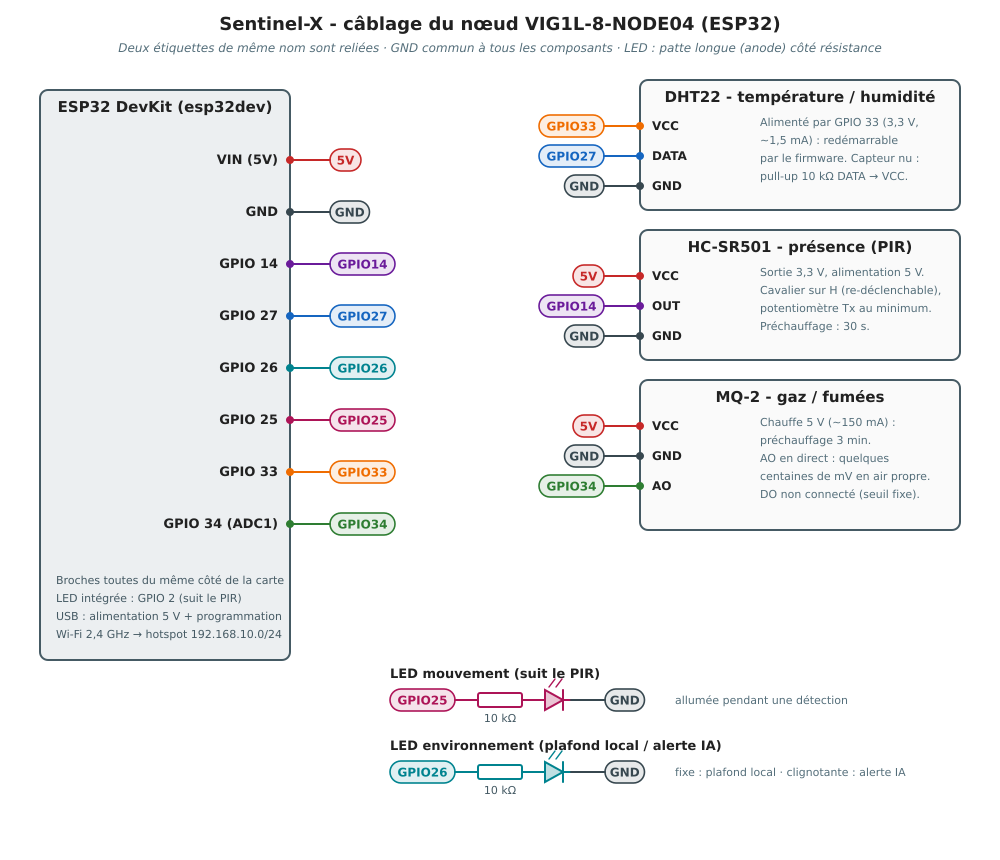
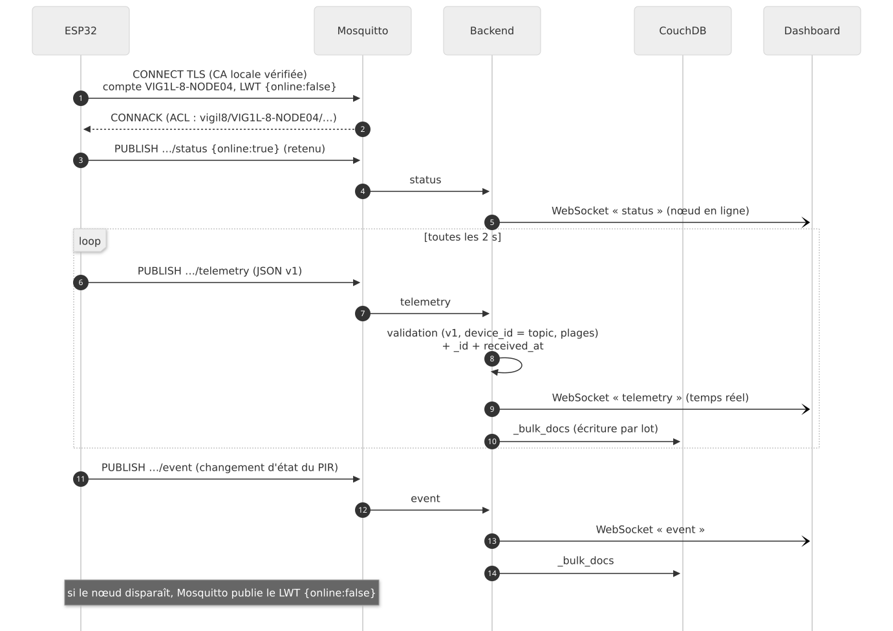
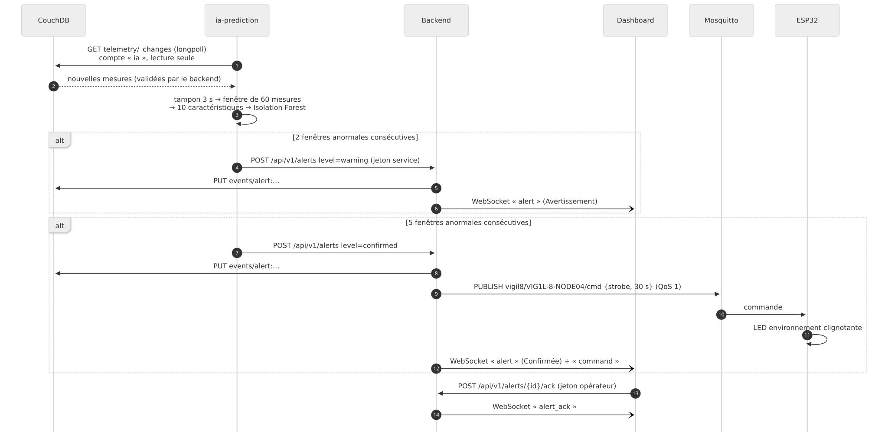
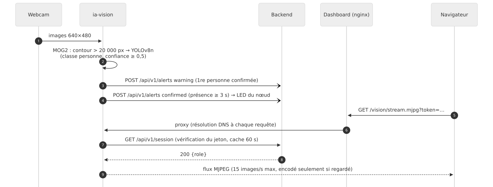
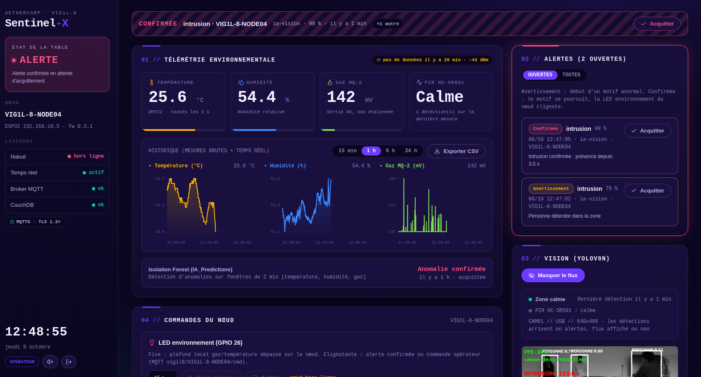

| Groupe | G04 |
|---|---|
| Nœud | VIG1L-8-NODE04 (ESP32) |
| Option matérielle | B — Topologie distribuée « Edge-to-Server » : PC Serveur Local = ordinateur portable Linux d'un membre du groupe |
| Dépôts | github.com/ESPI-Workshop-Vig1l-8 : infra, backend, dashboard, firmware, IA_Vision, IA_Predictions |
| Membre | Filière | Rôle principal |
|---|---|---|
| Julien DAUVERGNE | INFRA / CYBER | Infrastructure, réseau, sécurité, firmware ESP32, intégration |
| Lucas DIOT | WEB | Backend et dashboard |
| Rem TSHIMANGA | IA | Vision (YOLO) et maintenance prédictive |
| Latif MOUINOU | CYBER | Sécurité |
infra/docs/gen/ (HTML + diagrammes).
FAIT réalisé et testé.
Les noms techniques (topics, champs JSON, variables) sont en police fixe.
Sentinel-X est un boîtier de surveillance autonome pour les micro-centrales d'AetherCorp. Un nœud ESP32 mesure la température, l'humidité, les gaz combustibles et la présence, et transmet ses mesures en MQTT chiffré (TLS) au PC Serveur Local. Celui-ci exécute, dans des conteneurs Docker isolés, le broker MQTT, la base de données, l'API, le tableau de bord et deux intelligences artificielles : une détection d'intrusion par vision (webcam USB, YOLOv8n) et une maintenance prédictive (Isolation Forest) qui repère les dérives avant tout seuil critique.
Transparence : réalisation assistée par IA (Claude Code) pour la gestion git, le code du frontend et du backend, et les tests du backend Go et de l'API.
| Brique | Contenu | État |
|---|---|---|
| Nœud ESP32 | Firmware C++ (PlatformIO) : capteurs, JSON, MQTTS, LED d'alerte, diagnostic matériel | FAIT |
| Infrastructure | Docker Compose : Mosquitto, CouchDB, backend Go, dashboard, IA vision, IA prédiction ; scripts de certificats et de comptes | FAIT |
| Backend / dashboard | Ingestion validée, API REST + WebSocket, historique, alertes, commandes, export CSV d'entraînement | FAIT |
| IA | Vision MOG2 + YOLOv8n ; Isolation Forest entraîné sur les vraies mesures, détection en temps réel | FAIT |
| Sécurité | TLS, comptes et ACL par nœud, rôles API, conteneurs non root, secrets hors dépôt | FAIT |
| Exposition de l'hôte | MQTTS publié sur l'adresse du hotspot uniquement, dashboard sur la boucle locale, base non publiée (section 8.3) | FAIT |
| Mesures réelles | Réseau ESP32 ↔ serveur 1 à 2 ms, pile complète ≈ 133 Mio de RAM, modèle entraîné sur 1 h de mesures en salle | FAIT |
Le sujet impose quatre piliers : Edge Computing & IoT (un microcontrôleur unique qui capte et alerte localement), IA locale (vision sur webcam USB et détection prédictive sur séries temporelles, sans seuils statiques), infrastructure (conteneurs résilients, réseau de table isolé) et cybersécurité (chiffrement de bout en bout, durcissement). L'interconnexion de toutes les briques est éliminatoire pour la démonstration.
Le groupe a retenu l'option B, « Edge-to-Server » : le Raspberry Pi est retiré et le rôle de PC Serveur Local est tenu par l'ordinateur portable Linux d'un membre du groupe. Il exécute toute la pile Docker Compose, porte la webcam USB et sert de point d'accès Wi-Fi (hotspot) au réseau de table. Le boîtier Sentinel-X ne contient que l'ESP32 et ses capteurs.
linux/arm64 ; un passage à l'option A (Raspberry Pi 5) resterait possible sans modifier la pile.| Prévu par le sujet | Utilisé | Raison et conséquences |
|---|---|---|
| ESP8266 | ESP32 (DevKit) | Seul microcontrôleur disponible. Avantages : plus de broches, ADC 12 bits (ADC1 utilisable avec le Wi-Fi), pile TLS plus confortable (mbedTLS). |
| Buzzer piézoélectrique | 2 LED (mouvement, environnement) | Plus de buzzers disponibles. La LED environnement porte les alertes : fixe = premier avertissement local, clignotante = alerte confirmée par l'IA. |
| Écran OLED I2C | — | Plus d'écrans disponibles. L'état du nœud (IP, connexion, mesures) est visible sur le dashboard et le moniteur série. |
null, une coupure de série est détectée ; rien n'est masqué.| Élément | Valeur | Justification |
|---|---|---|
| Réseau | 192.168.10.0/24, SSID VIGIL8_HOTSPOT | Réseau dédié à la table, isolé des autres groupes |
| Sécurité Wi-Fi | WPA2-PSK, bande 2,4 GHz | L'ESP32 ne capte pas le 5 GHz |
| PC Serveur Local | 192.168.10.1 — passerelle et DHCP | Adresse inscrite dans le certificat TLS du broker |
| Nœud ESP32 | 192.168.10.5 (IP fixe) | Hors de la plage DHCP : aucun conflit possible avec un autre client |
| Plage DHCP | 192.168.10.10 à .254 | Clients occasionnels (aucun service ne leur est destiné) |

| Source → destination | Port / protocole | Chiffrement | Authentification | Exposition |
|---|---|---|---|---|
| ESP32 → broker | 18883/tcp (→ 8883) MQTT | TLS 1.2+, CA locale | compte du nœud + ACL | réseau de table |
| Navigateur → dashboard | 10443/tcp HTTP | — (boucle locale) | clé d'accès (jeton API) | 127.0.0.1 uniquement |
| backend ↔ broker | 1883/tcp MQTT | réseau Docker interne | compte backend | non publié |
| backend → CouchDB | 5984/tcp HTTP | réseau Docker interne | utilisateur backend (écriture) | non publié |
| ia-prediction → CouchDB | 5984/tcp HTTP | réseau Docker interne | utilisateur ia (lecture seule) | non publié |
| IA → backend | 5000/tcp HTTP | réseau Docker interne | jeton service | non publié |
| dashboard → ia-vision | 8000/tcp MJPEG | réseau Docker interne | clé d'accès vérifiée par le backend | non publié |
127.0.0.1 : la base n'est joignable que depuis les conteneurs du backend et de l'IA. L'export CSV d'entraînement passe par l'API (le backend lit la base et sert le fichier).ssh -L 10443:127.0.0.1:10443 <serveur>).18883 (au lieu de 8883) et dashboard sur 10443. Les attaques automatisées (robots, scripts de scan rapides, vers) visent les ports par défaut des services courants (1883/8883 pour MQTT, 80/443/8080 pour le web, 5984 pour CouchDB) : décaler les ports les évite et réduit le bruit dans les journaux. C'est une mesure complémentaire, pas une protection en soi : un scan complet (nmap -p-) les retrouve, la sécurité repose sur TLS, l'authentification et les ACL.192.168.10.1 uniquement, pas sur toutes les interfaces. Docker contourne le pare-feu de l'hôte pour les ports publiés : sans cette liaison, le broker serait joignable depuis le Wi-Fi de l'école ou l'Ethernet. Le hotspot doit donc être actif avant le démarrage de la pile.| Composant | Mesure / rôle | Alimentation | Broche ESP32 |
|---|---|---|---|
| DHT22 | Température, humidité (1 lecture / 2 s max) | 3,3 V par GPIO 33 | GPIO 27 |
| MQ-2 | Gaz combustibles, fumées (sortie analogique AO) | 5 V (chauffe ~150 mA) | GPIO 34 (ADC1), en direct |
| HC-SR501 | Présence infrarouge (sortie 3,3 V) | 5 V | GPIO 14 |
| LED mouvement + résistance | Allumée pendant une détection du PIR | — | GPIO 25 |
| LED environnement + résistance | Fixe : plafond local ; clignotante : alerte IA | — | GPIO 26 |
| LED intégrée | Suit le PIR | — | GPIO 2 |

firmware/include/config.h).MQ2_DIVIDER = 1). Sous une forte concentration de gaz, AO peut dépasser 3,3 V (voir les limites, section 11).
C++ avec PlatformIO (framework Arduino-ESP32 2.0.17), bibliothèques PubSubClient (MQTT), ArduinoJson 7 et DHT (Adafruit).
Deux environnements : esp32dev (firmware Sentinel-X) et diagnostic (test du câblage sans réseau).
include/config.h (versionné : identifiant, IP, broches, seuils) et include/secrets.h (ignoré par git : Wi-Fi, mot de passe MQTT, certificat de la CA). Sans secrets.h, la compilation s'arrête avec un message explicite.null) pendant ce temps.{"online":false}.{"strobe":true,"duration_s":8} fait clignoter la LED environnement (1 à 60 s).| Topic | Sens | Quand |
|---|---|---|
vigil8/<id>/telemetry | nœud → serveur | toutes les 2 s |
vigil8/<id>/event | nœud → serveur | changement d'état du PIR |
vigil8/<id>/status | nœud → serveur (retenu) | connexion ; LWT publié par le broker si le nœud disparaît |
vigil8/<id>/cmd | serveur → nœud | alerte confirmée ou commande opérateur |
{ "v": 1, "device_id": "VIG1L-8-NODE04", "seq": 18342, "uptime_ms": 36684012,
"temp_c": 25.8, "hum_pct": 61.5, "gas_mv": 259, "pir": false, "pir_events": 0,
"status": { "dht": "ok", "gas_warm": true, "env_warn": false, "rssi": -58 } }temp_c / hum_pct valent null si le DHT22 ne répond pas (pas de « dernière valeur connue » qui masquerait une panne).gas_mv : tension de sortie du MQ-2 en mV, non étalonnée (pas de ppm sans étalonnage en air propre).seq : compteur par topic. Un trou signale un message perdu, un retour à 0 avec un petit uptime_ms un redémarrage.status.gas_warm : faux pendant les 3 minutes de préchauffage, pour exclure ces mesures de l'entraînement.| Service | Image / technologie | Rôle | Utilisateur | Exposition |
|---|---|---|---|---|
mqtt-broker | Mosquitto 2.1 (digest épinglé) | Broker MQTT : TLS 8883 pour les nœuds, 1883 interne | mosquitto (1883) | 192.168.10.1:18883 → 8883 |
history-db | CouchDB 3.5 (digest épinglé) | Base documentaire : telemetry, events | couchdb (5984) | — (réseaux internes) |
history-db-init | CouchDB (curl) | Job au démarrage : bases, comptes, droits, vues | couchdb (5984) | — |
backend | Go 1.26, binaire statique | Ingestion MQTT, API REST, WebSocket | sentinel (10001) | — |
dashboard | React 19 + Vite, nginx non privilégié | Interface, proxy /api, /ws, /vision/ | nginx (101) | 127.0.0.1:10443 |
ia-prediction | Python 3.12, scikit-learn 1.9 | Isolation Forest en temps réel | ia (10001) | — |
ia-vision | Python 3.12, PyTorch CPU, YOLOv8n | Détection d'intrusion, flux MJPEG | vision (10001) | — (webcam /dev/video0) |

telemetry (mesures) et events (mouvements, statuts, commandes, alertes, annotations), créées avec un seul shard (q=1) pour que le flux des changements reste ordonné.<device_id>:<heure de réception en ms sur 13 chiffres> : uniques et triés par le temps, ce qui rend les requêtes par plage de dates efficaces._bulk_docs) toutes les 2 s ; si CouchDB est indisponible, les documents attendent en mémoire (jusqu'à 20 000 par base) et sont réessayés._stats) pour les graphiques longue durée.backend (rôle writer), utilisateur ia (rôle reader, écriture refusée par validate_doc_update), design docs réservés à l'administrateur.main de chaque dépôt (contexte Git distant) : rien n'est copié à la main.@sha256) : une mise à jour en amont ne change rien sans décision explicite.infra/.env (ignoré par git) ; scripts/gen-certs.sh crée la CA et le certificat du broker, scripts/mqtt-passwd.sh les comptes MQTT.docker compose build), puis fonctionnement hors ligne sur le hotspot (docker compose up -d) : le modèle YOLO est inclus dans l'image.cp .env.example .env # mots de passe et jetons
./scripts/gen-certs.sh 192.168.10.1 # CA locale + certificat du broker
./scripts/mqtt-passwd.sh # comptes MQTT (backend, nœuds)
docker compose build # avec Internet
docker compose up -d # puis hors ligne, sur le hotspotrestart: unless-stopped) et contrôles de santé (backend, dashboard).GET /api/v1/health (état MQTT et CouchDB, file d'écriture, messages rejetés), affiché dans le dashboard.docker stats ; la pile complète utilise environ 133 Mio de RAM et quelques % de CPU (section 10).
Le backend est le seul abonné à tous les nœuds. Il valide chaque message, ajoute l'heure de réception, le pousse immédiatement
au dashboard par WebSocket et l'écrit en base par lots. Un message dont le device_id ne correspond pas au topic est
rejeté et compté, même si l'ACL du broker l'a laissé passer.


Toutes les routes, sauf /api/v1/health, exigent un jeton Authorization: Bearer. Référence complète : backend/README.md.
| Route | Rôle | Usage |
|---|---|---|
GET /api/v1/devices | service | état temps réel des nœuds |
GET /api/v1/devices/{id}/telemetry | service | historique brut (≤ 6 h) ou agrégé par minute / heure |
GET /api/v1/devices/{id}/export.csv | service | CSV d'entraînement de l'Isolation Forest |
POST /api/v1/alerts | service | alerte de l'IA (warning / confirmed) — point d'entrée obligatoire du sujet |
POST /api/v1/alerts/{id}/ack | opérateur | acquittement |
POST /api/v1/annotations | opérateur | période de test (exclue de l'entraînement) |
POST /api/v1/devices/{id}/command | opérateur | LED environnement du nœud |
GET /ws | service | WebSocket : instantané puis chaque message |
device_id / topic, plages physiques du DHT22, cohérence dht / valeurs._id et received_at.ERR), coupures visibles sur les courbes.sessionStorage ; mode lecture seule avec le jeton service.
| Élément | Choix |
|---|---|
| Autorité | CA locale « Sentinel-X Local CA » (RSA 2048, 10 ans) ; clé privée jamais montée dans un conteneur |
| Certificat du broker | RSA 2048, SHA-256, 825 jours ; SAN : IP:192.168.10.1, DNS:192.168.10.1, 127.0.0.1, mqtt-broker, localhost |
| Protocole | TLS 1.2 minimum sur le port 8883 ; le port 1883 sans TLS n'est joignable que sur les réseaux Docker internes |
| Vérification côté nœud | L'ESP32 embarque le certificat de la CA et vérifie celui du broker : un faux broker est refusé |
| Particularité | mbedTLS 2.x de l'ESP32 ne compare que les noms DNS : l'IP est donc aussi déclarée comme nom DNS dans le certificat |
| Menace | Contrôle | État |
|---|---|---|
| Écoute / homme du milieu sur le Wi-Fi | MQTT sur TLS, certificat vérifié par le nœud ; Wi-Fi WPA2 | FAIT |
| Connexion anonyme au broker | allow_anonymous false, mots de passe hachés | FAIT |
| Usurpation d'un nœud | Un compte par nœud ; ACL vigil8/%u/… ; contrôle device_id = topic dans le backend | FAIT |
| Injection de commandes vers un nœud | Seul le compte backend peut publier sur …/cmd ; côté API, jeton opérateur requis | FAIT |
| Accès à la base | Authentification obligatoire, port non publié sur l'hôte (réseaux Docker du backend et de l'IA uniquement), rôles écrivain / lecteur, validation d'écriture | FAIT |
| Accès à l'API | Jetons opérateur / service (comparaison en temps constant), aucun secret par défaut | FAIT |
| Déni de service applicatif | 20 requêtes/s par IP, corps 16 Ko, délais HTTP, messages MQTT 4 Ko, 4 spectateurs vidéo max | FAIT |
| Accès au dashboard | Écoute sur 127.0.0.1 ; CSP stricte, X-Frame-Options, nosniff | FAIT |
| Flux de la caméra | Clé d'accès vérifiée auprès du backend ; clé absente des journaux nginx | FAIT |
| Fuite de secrets | .env, mots de passe MQTT, certificats, secrets.h ignorés par git ; ancien mot de passe Wi-Fi retiré du code | FAIT |
| Évasion de conteneur | Tous les services non root ; aucun conteneur privilégié ; seule la webcam est partagée | FAIT |
| Images compromises en amont | Images tierces épinglées par empreinte | FAIT |
| Attaques automatisées sur les ports par défaut | Ports non standard (MQTTS 18883, dashboard 10443) : hors de portée des scans et robots qui ne visent que les ports courants ; complément de TLS et de l'authentification | FAIT |
| Port exposé sur d'autres réseaux | MQTTS publié sur l'adresse du hotspot (192.168.10.1) uniquement : injoignable depuis le Wi-Fi de l'école ou l'Ethernet | FAIT |
| Accès distant à l'hôte | Aucun serveur SSH : le portable est administré sur place (section 8.3) | FAIT |
Le sujet prévoit un durcissement du système hôte (pare-feu, SSH par clés, privilèges du démon Docker), pensé pour un serveur dédié administré à distance, comme le Raspberry Pi de l'option A. Avec l'option B, le serveur est le portable de l'opérateur, utilisé sur place. Nous avons donc concentré la sécurité sur ce qui est réellement exposé : le réseau de table et le seul port publié.
| Mesure du sujet | Choix pour l'option B et justification |
|---|---|
| Fermeture des ports non requis (UFW / iptables) |
La surface est réduite à la source plutôt que filtrée après coup. Un seul port est joignable depuis le réseau : MQTTS 18883, publié
uniquement sur l'adresse du hotspot (192.168.10.1), protégé par TLS, un compte par nœud et des ACL.
Le dashboard n'écoute que sur 127.0.0.1, la base et l'API ne sont pas publiées. Un pare-feu UFW n'apporterait rien
de plus pour la pile : Docker contourne UFW pour les ports qu'il publie, c'est la liaison à l'adresse du hotspot qui fait foi.
Vérification : ss -ltnp ne montre que 192.168.10.1:18883 et 127.0.0.1:10443 pour la pile. |
| SSH par clés uniquement | Non pertinent : le portable est administré directement par son utilisateur, aucun serveur SSH n'y est lancé. Sans service SSH, il n'y a ni mot de passe à deviner ni clé à protéger. Pour un serveur dédié (option A), l'accès se ferait par clés uniquement. |
| Isolation des privilèges du démon Docker |
Traitée au niveau des conteneurs : tous les services tournent avec un utilisateur non root, aucun n'est privilégié, seule la webcam
est partagée, chaque réseau Docker ne relie qu'une paire de services. Retirer l'utilisateur du groupe docker ou activer
le remapping des UID protège contre un attaquant déjà connecté à la session du portable, ce qui sort du modèle de menace
retenu (attaques par le réseau de table). |
| Réseau de table |
Hotspot dédié du portable (WPA2), sous-réseau isolé 192.168.10.0/24 : les autres groupes ne partagent pas ce réseau. |
Un script Python (IA_Vision) analyse la webcam USB du serveur. Pour respecter la contrainte de moins de 100 ms par image,
le modèle de détection n'est pas lancé sur chaque image : une soustraction de fond repère d'abord les mouvements,
et seuls les grands mouvements déclenchent YOLOv8n.
| Étape | Paramètres |
|---|---|
| Prétraitement | Image redimensionnée en 640×480, niveaux de gris, flou gaussien 21×21 |
| Soustraction de fond (MOG2) | Historique 500, seuil 80, ombres détectées ; 60 premières images d'apprentissage du décor |
| Filtre de lumière | Changement sur plus de 40 % de l'image ignoré (allumage d'une lampe, nuage) |
| Déclenchement | Contour de plus de 20 000 px → YOLOv8n |
| Confirmation | YOLOv8n, classe « personne » uniquement, confiance ≥ 0,5, entrée 320 px |
| Persistance | L'intrusion se termine après 2 s sans personne détectée |
| Alertes | warning à la première personne confirmée ; confirmed après 3 s de présence (LED du nœud) |
Les alertes sont envoyées dans un thread séparé : la boucle vidéo n'attend jamais le réseau. Le flux MJPEG des images annotées n'est encodé que si quelqu'un le regarde.
| Mesure | Tests (CPU, conteneur) |
|---|---|
| Images par seconde | 24,5 |
| Latence par image | 37 ms (objectif < 100 ms) |
| Inférence YOLOv8n seule | 38 ms |
Le sujet interdit les seuils statiques et demande de détecter des anomalies « cinétiques », par exemple une hausse lente de la température associée à une micro-déviation du gaz, avant tout seuil critique. Nous n'avons aucun exemple réel d'anomalie étiqueté : un modèle supervisé (Random Forest) ne pourrait être entraîné que sur des données inventées. L'Isolation Forest est non supervisé : il apprend ce qui est normal à partir des vraies mesures et isole ce qui s'en écarte.
StandardScaler) puis Isolation Forest (200 arbres, contamination 0,5 %).Pour que le modèle n'apprenne que du « normal », les mesures suivantes sont retirées :
Les données viennent du bouton « Exporter CSV » du dashboard (l'API lit la base et sert le fichier, pour un entraînement sur un autre PC),
ou directement de CouchDB depuis le conteneur (docker compose run --rm ia-prediction python entrainement.py --source couchdb) : les deux appliquent exactement les mêmes règles.
_changes, compte lecture seule), tampon de 3 s pour les remettre dans l'ordre.| Jeu | Résultat |
|---|---|
| Données simulées normales (10 séries de 20 min) | 0,07 % de fenêtres en fausse alerte |
| Dérive lente simulée (température, gaz, humidité) | Détectée 10 fois sur 10, en 0,8 min en moyenne |
| Pic de gaz simulé | Détecté 10 fois sur 10, en 0,2 min en moyenne |
| Chaîne complète, nœud simulé (modèle entraîné sur 900 mesures) | Avertissement à gaz = 266 mV (+8 mV au-dessus de la normale), confirmation 3 mesures plus tard, LED commandée |
Modèle utilisé en démonstration : réentraîné sur une plage d'une heure de mesures réelles prises dans la salle
(entrainement.py --source couchdb), avec les mêmes règles de nettoyage et de découpage en segments continus.
En plus des tests unitaires (backend Go, avec détection des accès concurrents), chaque évolution a été validée sur une pile complète : infrastructure, backend, dashboard et IA, avec un nœud ESP32 simulé qui publie au même format, en MQTTS, avec son compte.
| Domaine | Vérification | Résultat |
|---|---|---|
| TLS | Connexion sans la CA du projet | refusée |
| Broker | Connexion anonyme, mauvais mot de passe | refusées |
| ACL | Un nœud publie au nom d'un autre ; un nœud lit les commandes d'un autre ; l'IA publie une commande | bloqués |
| Backend | device_id différent du topic | rejeté et compté |
| CouchDB | Requête anonyme ; écriture par ia ; suppression d'une vue par backend | 401 / 403 / 403 |
| API | Sans jeton ; jeton service sur une commande ; champ JSON inconnu | 401 / 403 / 400 |
| WebSocket | Mauvais jeton ; origine étrangère | 401 / 403 |
| Vision | Flux sans clé ; avec clé | 401 / 200 |
| Prédiction | Redémarrage pendant une anomalie | aucun doublon |
| Export | CSV exporté puis entraînement | 900 / 900 mesures, modèle entraîné |
| Mesure | Résultat |
|---|---|
| Latence réseau ESP32 ↔ PC Serveur Local (hotspot) | 1 à 2 ms |
| Vision, sur le PC de test (CPU, conteneur) | 37 ms par image, 24,5 images/s (section 9.1) |
| Entraînement de l'Isolation Forest | 1 h de mesures réelles dans la salle |
Consommation de la pile sur le PC Serveur Local (docker stats, 15,3 Gio de RAM) :
| Conteneur | CPU | Mémoire | Processus |
|---|---|---|---|
history-db (CouchDB) | 2,15 % | 86,9 Mio | 79 |
ia-prediction | 0,00 % | 18,5 Mio | 31 |
dashboard (nginx) | 0,00 % | 15,2 Mio | 17 |
backend (Go) | 0,04 % | 10,2 Mio | 20 |
mqtt-broker (Mosquitto) | 0,06 % | 2,1 Mio | 1 |
| Total | ≈ 2,3 % | ≈ 133 Mio (0,85 %) | 148 |
La pile tient largement sur le portable : la base CouchDB est le seul poste notable. La vision (PyTorch) n'était pas lancée pendant ce relevé.
| Limite | Conséquence | Amélioration |
|---|---|---|
Pas de durcissement du système hôte (pare-feu, SSH, groupe docker) | Acceptable pour un portable utilisé sur place (option B), pas pour un serveur dédié | Pour l'option A : UFW, SSH par clés uniquement, utilisateur hors du groupe docker, remapping des UID |
| Accès distant au dashboard | Sans objet en option B : le dashboard est affiché directement sur le portable serveur | Avec un serveur dédié (Raspberry Pi, option A) : reverse proxy HTTPS devant le dashboard et l'API, accès d'administration par VPN uniquement |
| Wi-Fi WPA2-PSK partagé | Qui connaît le mot de passe rejoint le réseau (le MQTT reste protégé) | WPA3, ou isolation des clients sur le hotspot |
| Authentification du nœud par mot de passe | Mot de passe lisible dans la mémoire flash si l'ESP32 est volé | Certificat client par nœud (mTLS), chiffrement de la flash |
| Clé d'accès dans l'URL du WebSocket et du flux vidéo | Les navigateurs ne permettent pas d'en-tête ; la clé est exclue des journaux | Jeton court à usage unique |
| Dashboard en HTTP | Acceptable car limité à 127.0.0.1 | HTTPS avec la CA locale si l'accès distant devient nécessaire |
| MQ-2 branché sans pont diviseur | Sous gaz fort, AO peut dépasser 3,3 V : l'ADC sature vers 3,1 V et l'entrée de l'ESP32 n'est pas protégée | Pont diviseur 10 kΩ / 20 kΩ (facteur 1,5 dans le firmware), puis réentraînement de l'IA sur la nouvelle échelle |
| MQ-2 non étalonné | Valeurs relatives (mV), pas de ppm | Étalonnage en air propre (R0), puis conversion par courbe |
| Filtre de lumière de la vision | Une personne très proche (plus de 40 % de l'image) peut être ignorée | Ajuster le seuil, ou lancer YOLO périodiquement |
| Modèle IA entraîné sur peu de données | Variations jour / nuit pas encore apprises | Collecter plusieurs jours, réentraîner régulièrement |
| Dépôts publics | Choix lié au contexte scolaire (construction sans identifiants) | Dépôts privés et clé de déploiement en lecture seule |
| Dépôt | Contenu |
|---|---|
infra | Docker Compose, configuration Mosquitto et CouchDB, scripts, ce rapport (docs/gen/, PDF dans docs/) |
backend | Service Go : ingestion MQTT, API REST, WebSocket, export CSV |
dashboard | Interface React, configuration nginx |
firmware | Firmware ESP32 (PlatformIO), diagnostic matériel |
IA_Vision | Détection d'intrusion, flux MJPEG, image Docker |
IA_Predictions | Isolation Forest : génération de données, entraînement, export, détection en temps réel |
| Compte | Où | Droits |
|---|---|---|
VIG1L-8-NODE04 | Mosquitto | publie sur ses propres topics, lit ses commandes |
backend | Mosquitto | lit tous les nœuds, publie les commandes |
admin | CouchDB | administration, job d'initialisation uniquement |
backend | CouchDB | rôle writer |
ia | CouchDB | rôle reader (lecture seule) |
| jeton opérateur | API | tout, y compris commandes et acquittements |
| jeton service | API | lecture et envoi d'alertes (IA) |
Tous les secrets sont dans infra/.env, infra/config/mosquitto/passwd (haché), infra/certs/ et firmware/include/secrets.h, ignorés par git.